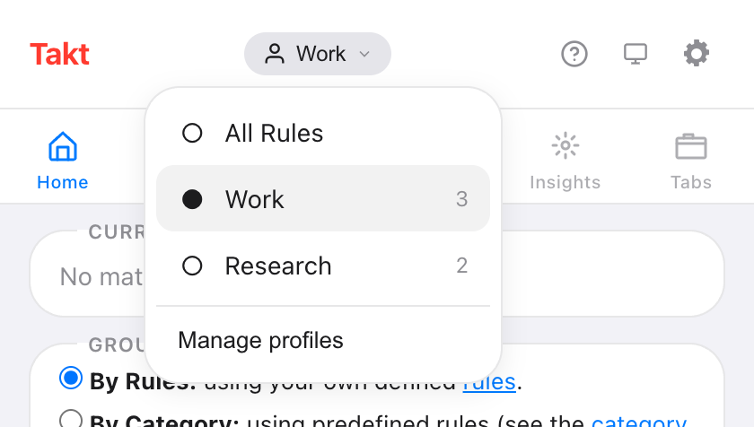
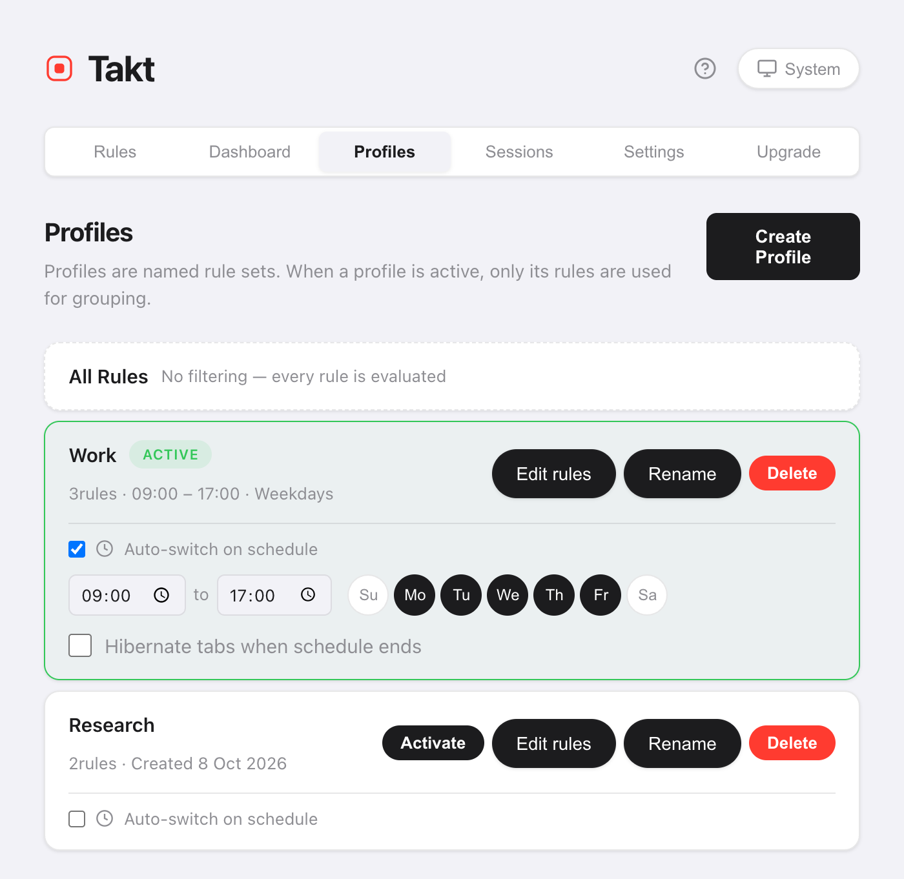

Short answer: in Takt's options page, open Profiles, create "Work" and "Personal", and assign rules to each. Switch from the popup's profile menu, or tick Auto-switch on schedule and set the hours and days.
- When a profile is active, only its rules group your tabs.
- Schedules run by time of day and day of week, checked once a minute.
- Optional: hibernate your tabs when the schedule ends. Premium
Why would I want more than one set of tab rules?
Because a rule that helps at work gets in the way at home. A "Code" group for GitHub is right at 10:00. At 21:00 you might want YouTube and recipes grouped instead, and no work groups at all.
Without profiles you have two choices: one long rule list that tries to cover everything, or switching rules on and off by hand. Profiles let each context keep its own short list.
How do I create a profile?
- Open Takt's options page and go to Profiles.
- Click Create Profile and give it a name.
- Copy all your current rules into it, or start empty.
- Click Edit rules to tick the rules this profile uses.
A new rule you create while a profile is active is added to that profile automatically.
How do I switch between profiles?
Open the popup and click the profile name at the top. The menu lists All Rules and each profile, with its rule count. Pick one and it applies straight away.

All Rules turns profiles off, so every rule is evaluated. Switching doesn't touch groups you already have. New tabs follow the new rules; click Group Tabs in the popup to regroup the rest.
How do I switch profiles automatically by time of day?
On a profile card, tick Auto-switch on schedule. Then set:
- Start and end time. The default is 09:00 to 17:00.
- Days. Toggle Su to Sa. The default is Monday to Friday.
- Hibernate tabs when schedule ends (optional).

Takt checks the schedule once a minute. When the window starts, it activates the profile. When the window ends, it goes back to All Rules.
If two schedules overlap, the profile created first wins.
What does "Hibernate tabs when schedule ends" do?
At the end of the window, Takt hibernates your open tabs. It skips the active tab, tabs playing audio, pinned tabs and any URL on your never-suspend list.
Your work tabs stop using memory when the workday ends, and they stay in the Hibernate list until you wake them.
Profiles vs other ways to separate work and home
| Separate Chrome profiles | Takt profiles | |
|---|---|---|
| What's separate | Everything: windows, history, logins | Only the grouping rules |
| Same window and tabs | No | Yes |
| Switches on a schedule | No | Yes |
If you need separate logins and history, use separate Chrome profiles. Takt profiles only change how tabs are grouped inside the browser you already use.
What profiles don't do
- They don't close or open tabs. A profile changes which rules apply. To swap a whole set of tabs, use sessions.
- A schedule wins during its window. Switch away by hand during scheduled hours and Takt switches back at the next check, within about a minute. Turn the schedule off to stay on another profile.
- The end time must be after the start time. A window that runs past midnight needs two profiles.
Work rules at work. Home rules at home.
Add Takt to Chrome, freeFAQ
What happens to rules that aren't in the active profile?
They're ignored until you switch back. Select All Rules to use every rule again.
Does switching profiles regroup my open tabs?
No. Existing groups stay. New tabs follow the new rules. Click Group Tabs in the popup to regroup what's open.
How often does Takt check the schedule?
Once a minute. A profile turns on within about a minute of its start time and off within about a minute of its end time.
Are profiles free?
No. Profiles and schedules are Premium, $3/month or $30/year. The free plan includes 5 rules and rule-based grouping.